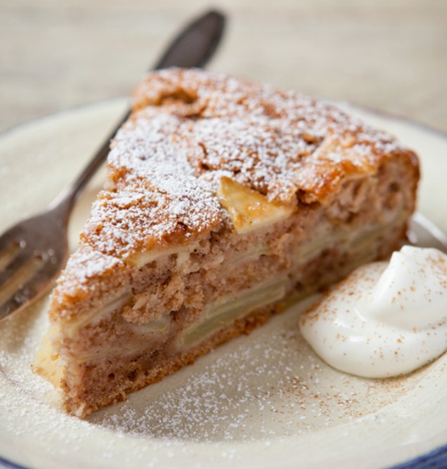

SPICED APPLE CAKE
Makes 2 cakes — delicious and freezes really well
Ingredients
 Ingredients
Ingredients

| Base (2) | 1.5x (3) | 2x (4) | |
|---|---|---|---|
| Butter | 125 g | 190 g | 250 g |
| Sugar | ¾ cup | 1 cup | 1½ cups |
| Eggs | 2 | 3 | 4 |
| Self-raising flour | 2 large cups | 3 cups | 4 cups |
| Mixed spice | 1 heaped tsp | 1½ tsp | 2 tsp |
| Vanilla | splash | splash | splash |
| Tinned apples | 1 large tin | 1½ tins | 2 tins |
| Nutmeg (sprinkle) | to taste | to taste | to taste |
| Vanilla icing | for topping | for topping | for topping |
| Cinnamon (dust) | to taste | to taste | to taste |

Method
- Cream the butter and sugar together, then beat in the eggs and a splash of vanilla.
- Mix in the flour and mixed spice until a soft dough forms.
- Divide the dough into 4 equal portions.
- Grease two sponge cake tins well, or line them with baking paper.
- Press one portion of dough into the bottom of each tin. Top with half the tinned apples in each, then sprinkle with nutmeg.
- Roll or press a third portion of dough onto baking paper in the shape of the cake tin, then upend it on top of the apple in the first tin. Repeat with the fourth portion for the second tin.
- Bake at moderate oven heat (around 180°C) for 30 minutes, or until golden.
- When the cakes are cold, ice thinly with vanilla icing and sprinkle with cinnamon.